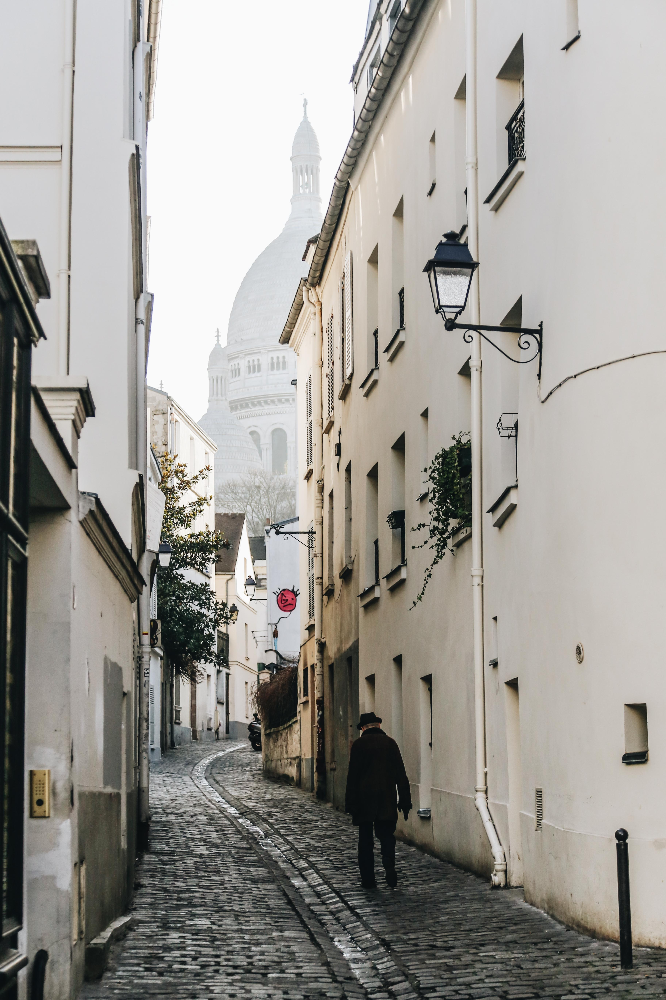
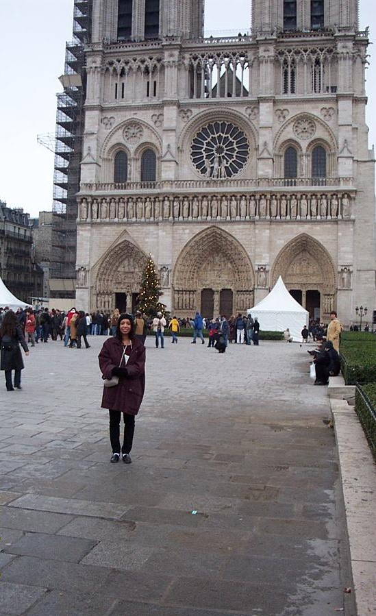
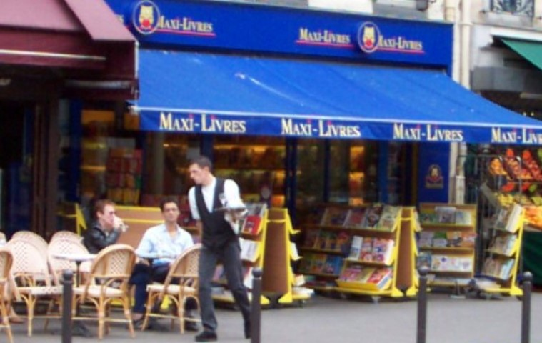

One of My Favorite Places...Paris!

Photo credit: Jacob Peters-Lehm on Unsplash.com

Photo credit: Bram Naus on Unsplash.com

Photo credit: Joshua Humphrey on Unsplash.com

Photo credit: Giuseppe Mondì on Unsplash.com

Photo credit: Patricia Gust

Photo credit: Patricia Gust

Photo credit: Ilnur Kalimullin on Unsplash.com
Photo credit: William West on Unsplash.com